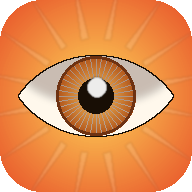

Ну і хто ж ти?
Квіз для компанії: 5 хитрих питань — і агент виносить вердикт: піца твого духу, внутрішня рослина, факультет Гоґвортсу й інше.
Грати →📲 Можна встановити як застосунок — меню браузера → «Додати на головний екран».

Квіз для компанії: 5 хитрих питань — і агент виносить вердикт: піца твого духу, внутрішня рослина, факультет Гоґвортсу й інше.
Грати →